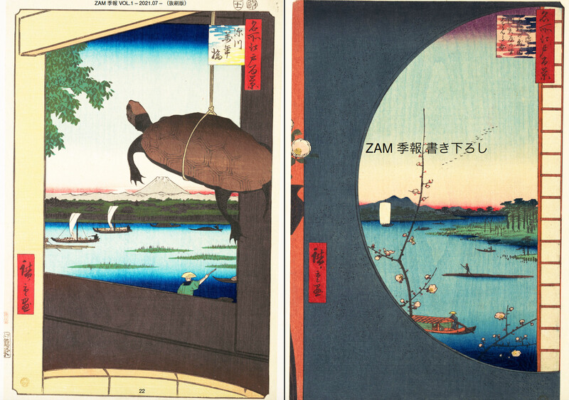
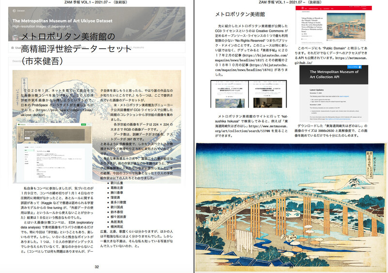
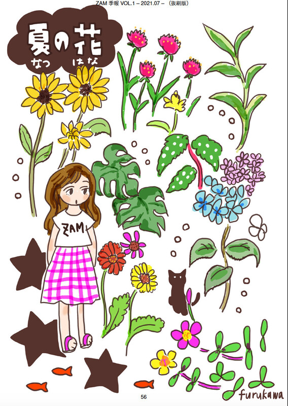
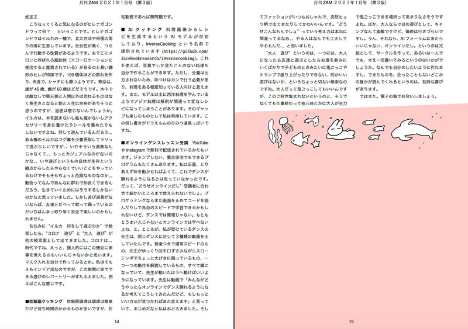
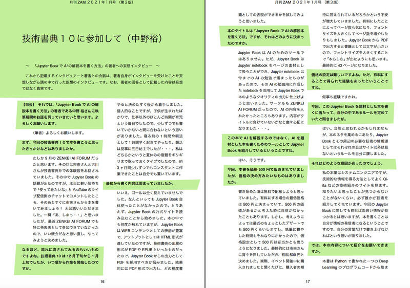
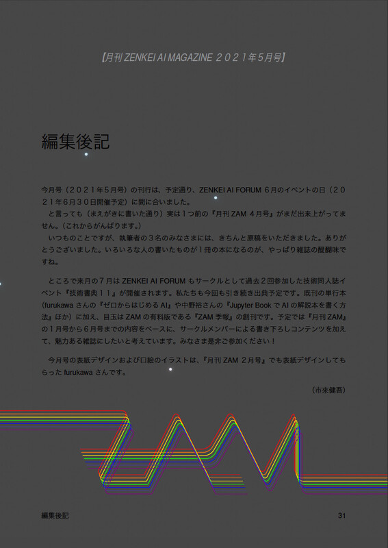

ZAF ２０２１年７月
今回の内容
技術書典１１お疲れ様でした！
- 前座 [6:30 - 6:45]
- （前座）技術書典１１、終わりましたね 〜本棚（購入本）紹介
- 第１部 [6:45 - 7:15]
なんで ZAM をやっているのか？ - 第２部 [7:15 - 8:00]
（祝）『ZAM 季報 VOL.1』刊行！- 内容について - 表紙 / 目次 / ビジュアル
- 月刊 ZAM １月号を改訂しました
- 進捗の振り返り
- 『ZAM 季報』解題その１、東海道五十三次
- 『ZAM 季報』解題その２、虹
- 『ZAM 季報』解題その３、クイズ
- 第３部 [8:00 - 9:00] （執筆者座談会）
ZAM 執筆者のみなさま、ありがとうございます！- 月刊 ZAM これまでの表紙、一覧
- 月刊 ZAM 執筆者のみなさま、ありがとう！
- 技術書典の執筆者のみなさま、ありがとう！
- 『ZAM 季報』執筆者のみなさま、ありがとう！
いちき / furukawa さん / 山本浩貴さん / 河村千種さん / 窪田智紗季さん /
中野裕さん / ホンダナオさん / 大島圭祐さん / 石川達也さん / 米田稔さん - これからの『ZAM』について
- 今日のおわりに
（前座）技術書典１１、終わりましたね
- ぼくの本棚（『技術書典』で買った本）

- 技術書典１１
楔形文字で綴る人理遡行運命譚 Cuneiform/Grand Order (mystt) PythonとTensorFlowで作る類似画像検索 (sat0b) 技術季報Vol.11 （技術書典運営事務局） 餃子をつくろう (TORINOSU) 


- 技術書典１０
写真を点描画ふうに変換するツールをつくる (TeamJ) 手編みと/手織りとAI手芸 (TORINOSU) Jupyter BookでAIの解説本を書く方法 (ZENKEI AI FORUM) 技術書を自作PDFリーダーで読む - Haskellでつくる不思議な読書体験 (1) (関数型玩具製作所) 技術季報Vol.10 (技術書典運営事務局) 


- 技術書典９
浮動小数点数小話 (だめぽラボ) 新世紀の計算尺入門 第三版改訂版 (お台場計算尺) モザイク除去から学ぶ 最先端のディープラーニング (じゅ～しぃ～すくりぷと) サークル味噌とんトロ定食の表紙の作り方、考え方。 (味噌とんトロ定食) ビジネスパーソンのためのセルフメディケーション読本 (薬局お茶の水ファーマシー)


フォトグラメトリをはじめましょう (いずれこの技術が滅びるとしても) 技術季報Vol.9 (技術書典運営事務局) ゼロからはじめるAI (ZENKEI AI FORUM) Gitのサブモジュールで困ったら読む本 (mochikoAsTech) 


なんで ZAM をやっているのか？
- 月刊 ZAM ２月号『月刊 ZENKEI AI MAGAZINE』創刊 より
(https://konnichiwa-ai-forum.github.io/ZAM202102/)


- 抜き出すと：
- ZAF は（地域）コミュニティを目指している。
- コミュニティとは「主体的な人」の集まりであり、 それはつまり「秘密結社」だ（瀧本哲史）
- （秘密）結社は同人であり、 同人といえば同人誌である
- 人は、たのしそうなイベントに集まる
- 思考やアイデアは、 おもしろそうな雑誌のまわりに集まる
- 「たのしそうなイベント」が ZAF である
- 「おもしろそうな雑誌」が ZAM である！


『ZAM 構想』について
- ひきつづき、月刊 ZAM ２月号『月刊 ZENKEI AI MAGAZINE』創刊 より
(https://konnichiwa-ai-forum.github.io/ZAM202102/)


難しい問題に取り組むには計画が必要です。 ということで始めるにあたってあれこれと構想を練ってみました。 まず考えたのは「無料版」と「有料版」を分けるという考えです。 「無料版」は、 • 月刊で、無料で誰でも読める形で、全世界に公開 • 内容は、毎月開催している ZAF の内容がベース • 発行は毎月の ZAF 開催日で、前月の内容の ZAM を出す という形。 既に毎月イベントを運営してきた経験があるし、 イベントのコンテンツはあるので、 それほど無理をしなくても実施できるでしょう。 ZAF のイベントが基本的にオープンなイベントなので 必然的に『月刊 ZAM』もオープンアクセスな雑誌にします。 ただそれだけだと、せっかく「雑誌」という媒体を作るのに もったいない気がしました。 雑誌といえば「連載コーナー」ですよね。 ZAF サークルとしてこれまで２度の『技術書典』で ４冊の本を企画、出版してきました。
これらは「単行本」であり、 執筆者それぞれのソロ活動的な側面があります。 執筆へのハードルという意味では、 雑誌への寄稿という形にすると一度の執筆の分量が減るので、 その結果サークルメンバーの執筆活動への参入を促すだろう という思いもあります。 「有料版」は、 • 季刊（あるいは年数回）で刊行 • 無料版の月刊の内容をまとめる • 書き下ろしコンテンツなどを追加 • タイミングが合えば『技術書典』などのイベントで販売 というイメージです。 刊行が進んで書き下ろし連載の内容が増えてきたら、 それを「単行本」としてまとめて出版することもできます。 「有料版 ZAM」の売り上げは ZAF に、 単行本の売り上げは（これまで通り）執筆者に還元すれば、 よい循環ができるかなと思っています。


（祝）『ZAM 季報 VOL.1』刊行！
『ZAM 季報 VOL.1』できあがりました！
- これまでの『月刊 ZAM』執筆者のみなさま、ありがとうございました！
- 『季報』への書き下ろし原稿を書いていただいた執筆者のみなさま、 ありがとうございました2！！
- おかげさまで、本文１８６ページ（電子版）の立派な雑誌が完成しました

(https://techbookfest.org/product/4813001968320512)
内容について
どんなものができたのか、お披露目！
（値段をつけて売ってるものなので、見せてもいい部分について）
- 表紙

- 素人っぽいですが…
- でも、プロジェクト初期（４月２７日）に素案として出したもの

から比べたら、ずっといいものになったと思いませんか？ - （designed by K. Ichiki です）


目次
（第１版のもの -- 本文１８４ページ）

ビジュアル
雑誌といえば、ビジュアルですね。
全ページ、フルカラー！
（第３版 - 抜刷版）
- 表扉（目次、まえがき）
- ZENKEI AI FORUM 全歴史

- ZAM 季報 書き下ろしパート

(furukawa) （山本浩貴） （いちき）  （河村千種） （窪田智紗季） (furukawa)  - 編集後記
- 裏扉

月刊 ZAM １月号を改訂しました
- 『月刊 ZAM １月号』（創刊号）は、 Re:VIEW で版組みしていました。
- ２月号以降は（編集長の好みから） LaTeX でゴリゴリと書くようになりました。
- 『ZAM 季報』に既刊の『月刊 ZAM』を含めるにあたり、
２段組にしたりとか、スタイル的にアップデートしたくなり、
改めて LaTeX で版組しなおしました。 - github に公開済みです。
https://github.com/zenkei-ai-forum/ZAM202101

- ページのサムネール
 
進捗の振り返り
４月下旬に『技術書典１１』がアナウンスされた時に
オンラインフォーラムにスレッドを切りましたが、
実施に的な執筆作業、編集作業は６月に入ってからでした（反省）
| mon | tue | wed | thu | fri | sat | sun |
|---|---|---|---|---|---|---|
| 6/ 7 |
6/ 8 |
6/ 9 |
6/10 河村さんの原稿 届く！ |
6/11 |
6/12 | 6/13 |
| 6/14 |
6/15 |
6/16 |
6/17 |
6/18 |
6/19 | 6/20 |
| 6/21 |
6/22 |
6/23 |
6/24 |
6/25 |
6/26 | 6/27 |
| 6/28 |
6/29 |
6/30 ZAF ６月 |
7/ 1 |
7/ 2 「最後の追い込み」 （全然、最後ではなかった…） |
7/ 3 | 7/ 4 |
| 7/ 5 初稿、公開 |
7/ 6 furukawaさん「夏の花」届く！ 
|
7/ 7 |
7/ 8 |
7/ 9 智紗季さんの原稿届く！ |
7/10 山本さんの原稿届く！ 
技術書典１１ スタート！ 
|
7/11 表紙デザイン 
|
| 7/12 |
7/13 河村さんから改訂稿届く！ 『月刊 ZAM ４月号』あきらめる |
7/14 |
7/15 改訂稿アップ |
7/16 |
7/17 | 7/18 改訂稿アップ （２段組） 
|
| 7/19 『ZAF 全史』初稿 
|
7/20 改訂稿アップ 
|
7/21 脱稿！ 
|
7/22 祝日 販売開始！ 
|
7/23 祝日 改訂版アップ 
|
7/24 | 7/25 技術書典１１ 最終日

|
| 7/26 |
7/27 |
7/28 ZENKEI AI FORUM |
7/29 |
7/30 |
7/31 | 8/ 1 |
- 4/23 (Fri)


- 4/27 (Tue)

- 5/26 (Wed) - ZAF ５月開催日

- 6/10 (Thu) - 河村さんから原稿届く！


- 7/2 (Fri)

- 7/5 (Mon) - 初稿、公開

- 7/6 (Tue)
- 河村さんの原稿改訂、furukawaさん「夏の花」届く！


- 7/9 (Fri) - 智紗季さんの原稿届く！

- 7/10 (Sat) - 山本さんの原稿届く！


- 7/11 (Sun) - 表紙デザイン


- 7/13 (Tue) - 河村さんから改訂稿届く！、
『月刊 ZAM ４月号』あきらめる

- 7/15 (Thu) - 改訂稿アップ

- 7/17 (Sat)


- 7/18 (Sun) - 改訂稿アップ（２段組）


- 7/19 (Mon) - 『ZAF 全史』初稿


- 7/20 (Tue) - 改訂稿アップ


- （7/20 の深夜）

- 7/21 (Wed) - 脱稿！


- 7/22 (Thu) - 販売開始！

(https://techbookfest.org/product/4813001968320512)


- 7/23 (Fri) - 改訂版アップ


(https://techbookfest.org/product/4813001968320512)
- 7/25 (Sun) - 技術書典１１終了


(https://youtu.be/jCtiwYoTky0?t=6389)


『ZAM 季報』解題その１、東海道五十三次
- 全体の構成を見直してみると……
表扉（表紙開けての見開き） 裏扉（奥付、最後のページ） からはじまって
本文全１８６ページ
結構な大作になりました！ - これ、言うまでもないですね
- 左は「日本橋」
- 右は「京都三条大橋」
- はるばる江戸から京都までやってきました、と言う感じです
『ZAM 季報』解題その２、虹
- 月刊 ZAM ２月号でデザインして以来のお気に入りの「ZAM レインボー」

さて、クイズです
今回の『ZAM 季報 VOL.1』の中に、さて、虹はいくつありましたか？
正解は…
みなさん、ページをめくって、調べてみてください
歌川広重『六十余州名所図会 対馬 海岸 夕晴』
MET-53785
歌川広重『東都名所 芝愛宕山上の図』
MET-37057
『ZAM 季報』解題その３、クイズ
- （おまけ）『ZAM 季報』クイズ
- 後半、 furukawa さんの『夏の花』の後に、 広重と北斎の花鳥画をピックアップしました。
- 広重の方は短冊の絵を合計３１枚、掲載しました。

- ただし、絵柄が同じものが含まれています。
- クイズ：同じ図柄の絵を、すべてピックアップしてみましょう！
- （左右の絵の「間違い探し」の、逆バージョン、みたいなクイズです）

ZAM 執筆者のみなさま、ありがとうございます！
執筆者のみなさまあっての ZAM です。あらためて、みなさま、ありがとうございます！
月刊 ZAM これまでの表紙、一覧
月刊 ZAM １月号
（いちき）
|
月刊 ZAM ２月号
(furukawa) |
|
月刊 ZAM ３月号
（ホンダナオ） |
月刊 ZAM ５月号
(furuwaka) |
月刊 ZAM 執筆者のみなさま、ありがとう！
| 月刊 ZAM １月号 furukawa さん |
月刊 ZAM １月号 中野裕さん |
月刊 ZAM ３月号 ホンダナオさん |
月刊 ZAM ３月号 大島圭祐さん |
| 月刊 ZAM ５月号 furukawa さん |
月刊 ZAM ５月号 石川達也さん |
月刊 ZAM ５月号 米田稔さん |
|
技術書典の執筆者のみなさま、ありがとう！
- 技術書典９
- 技術書典１０
...♦...
『ZAM 季報』執筆者のみなさま、ありがとう！
- いちき
（『ZENKEI AI FORUM 全史』と
『メトロポリタン美術館の高精細浮世絵データーセット』）
- furukawa さん
（『うーちゃんの日記』と『夏の花』）
- 山本浩貴さん
（『最近読んだ本『知ってるつもり──無知の科学』について』）
- 河村千種さん
（『日常で使えない英語トリビア』）
- 窪田智紗季さん
（『日常生活に生かされている「ナッジ」』）
...♦...
いちき
- ZAM 季報 VOL.1 『ZENKEI AI FORUM 全史』
- ZAM 季報 VOL.1 『メトロポリタン美術館の高精細浮世絵データーセット』
- ZAM 季報 VOL.1 表紙
- （初出）技術書典９『音楽と数理 才能にたよらない耳コピ』

- （初出）技術書典１０『厳密な計算 ふたつの球のなめらかなダンス』

- 月刊 ZAM １月号 表紙

...♦...
furukawa さん
- ZAM 季報 VOL.1 『夏の花』
- ZAM 季報 VOL.1 『うーちゃんの日記』
- （初出）技術書典９『ゼロからはじめるAI』

- 月刊 ZAM １月号『技術書典１０報告』
- 月刊 ZAM ２月号 表紙
- 月刊 ZAM ５月号 表紙
- 月刊 ZAM ５月号『アイリス VS ペンギン』
...♦...
山本浩貴さん
...♦...
河村千種さん
...♦...
窪田智紗季さん
...♦...
中野裕さん
...♦...
ホンダナオさん
...♦...
大島圭祐さん
...♦...
石川達也さん
...♦...
米田稔さん
...♦...
これからの『ZAM』について
- これまでどおり『月刊 ZAM』を、粛々と
- 書き下ろしコンテンツの、連載化を、是非！
- 「単行本」を目指しましょう！
- 次の『ZAM 季報』に向けて、新しい執筆者を第募集！！
- イメージとしては、
- ハードルの低い（＝はじめやすい）参画の場として
- 各人の学びのアウトプットの場として
- アイデアとアイデアの交流の場として
- 人と人の集まりの場として
（参照：『ZAM 構想』）
- 参考文献：
瀧本哲史
『君たちの友だちはいらない』
レイヴ、ウェンガー
『状況に埋め込まれた学習』
David Parkins
"Making Learning Whole"
読書猿
『独学大全』


...♦...
今日のおわりに


- いちき （『ZENKEI AI FORUM 全史』と 『メトロポリタン美術館の高精細浮世絵データーセット』）
- furukawa さん （『うーちゃんの日記』と『夏の花』）
- 山本浩貴さん （『最近読んだ本『知ってるつもり──無知の科学』について』）
- 河村千種さん （『日常で使えない英語トリビア』）
- 窪田智紗季さん （『日常生活に生かされている「ナッジ」』）
いちき
- ZAM 季報 VOL.1 『ZENKEI AI FORUM 全史』
- ZAM 季報 VOL.1 『メトロポリタン美術館の高精細浮世絵データーセット』
- ZAM 季報 VOL.1 表紙
- （初出）技術書典９『音楽と数理 才能にたよらない耳コピ』
- （初出）技術書典１０『厳密な計算 ふたつの球のなめらかなダンス』
- 月刊 ZAM １月号 表紙
furukawa さん
- ZAM 季報 VOL.1 『夏の花』
- ZAM 季報 VOL.1 『うーちゃんの日記』
- （初出）技術書典９『ゼロからはじめるAI』
- 月刊 ZAM １月号『技術書典１０報告』
- 月刊 ZAM ２月号 表紙
- 月刊 ZAM ５月号 表紙
- 月刊 ZAM ５月号『アイリス VS ペンギン』
山本浩貴さん
河村千種さん
窪田智紗季さん
中野裕さん
ホンダナオさん
大島圭祐さん
石川達也さん
米田稔さん
これからの『ZAM』について
- これまでどおり『月刊 ZAM』を、粛々と
- 書き下ろしコンテンツの、連載化を、是非！
- 「単行本」を目指しましょう！
- 次の『ZAM 季報』に向けて、新しい執筆者を第募集！！
- イメージとしては、
- ハードルの低い（＝はじめやすい）参画の場として
- 各人の学びのアウトプットの場として
- アイデアとアイデアの交流の場として
- 人と人の集まりの場として
- 参考文献：
瀧本哲史
『君たちの友だちはいらない』レイヴ、ウェンガー
『状況に埋め込まれた学習』David Parkins
"Making Learning Whole"読書猿
『独学大全』


今日のおわりに
さて、いつもなら『ZAF ７月』の終わりは『月刊 ZAM ７月号』の編集スタートですが……
- その前に、未刊の『月刊 ZAM ４月号』を完成させて、
既にオンライン版が刊行されている『月刊 ZAM ５月号』の印刷を手配して、
こちらも電子版が刊行されている『ZAM 季報 VOL.1』の抜刷版を印刷に回して、

と、 ZAM 編集部は忙しいです。

{kind=link}
{kind=link}
{kind=link}
{kind=link}
{kind=link}
{kind=link}
{kind=link}
{kind=link}
{kind=link}
{kind=link}
{kind=link}
{kind=link}
{kind=link}
{kind=link}
{kind=link}
{kind=link}
{kind=link}
{kind=link}
{kind=link}
{kind=link}
{kind=link}
{kind=link}
{kind=link}
{kind=link}
{kind=link}
{kind=link}
{kind=link}
{kind=link}
{kind=link}
{kind=link}
{kind=link}
{kind=link}
{kind=link}
{kind=link}
{kind=link}
{kind=link}
{kind=link}
{kind=link}
今後の予定
- 次回 ZAF ８月２５日開催の予定です。
- ZAF 講演者、 ZAM 執筆者、絶賛、大募集中です！
お気軽にお問い合わせください！